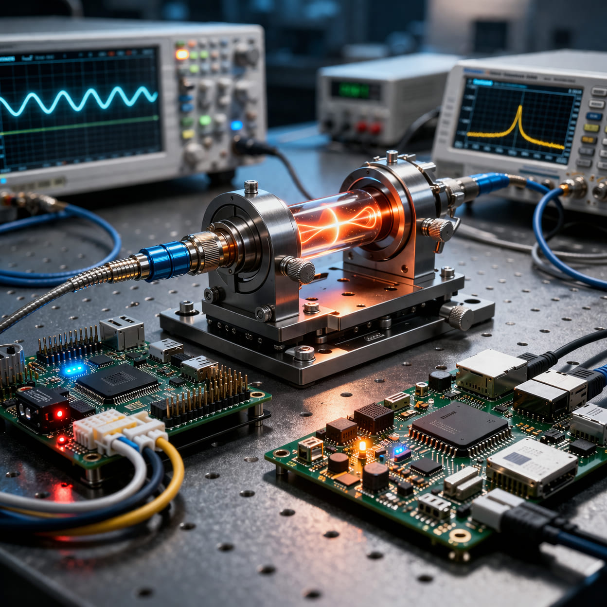

Who We Are
Cav-e-innoV is a deep-tech startup focused on developing next-generation cavity-enabled sensing solutions and embedded electronic systems. Incubated at IIT Delhi, we bridge fundamental research with real-world engineering to deliver high-performance sensing platforms.
Our expertise spans optics, signal processing, embedded systems, and AI-driven sensing, enabling applications across industrial automation, biomedical diagnostics, and robotics.
- ✔ Cavity-enhanced sensing systems
- ✔ Real-time embedded processing
- ✔ Custom hardware design
- ✔ AI-integrated signal analysis